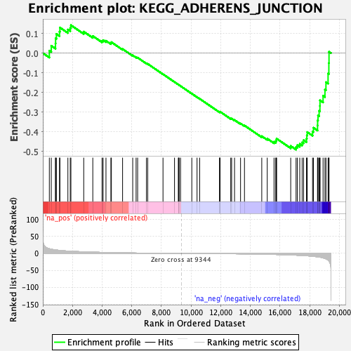
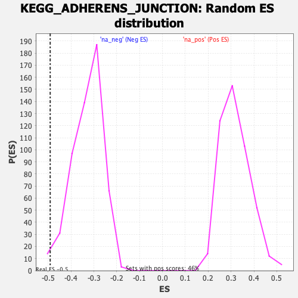

| | | Dataset | DE_genes |
| Phenotype | NoPhenotypeAvailable |
| Upregulated in class | na_neg |
| GeneSet | KEGG_ADHERENS_JUNCTION |
| Enrichment Score (ES) | -0.49112976 |
| Normalized Enrichment Score (NES) | -1.494204 |
| Nominal p-value | 0.022346368 |
| FDR q-value | 0.16901168 |
| FWER p-Value | 0.879 |
Table: GSEA Results Summary

Fig 1: Enrichment plot: KEGG_ADHERENS_JUNCTION
Profile of the Running ES Score & Positions of GeneSet Members on the Rank Ordered List
| SYMBOL | RANK IN GENE LIST | RANK METRIC SCORE | RUNNING ES | CORE ENRICHMENT | | 1 | WASF3 | 440 | 13.701 | 0.0123 | No |
| 2 | YES1 | 570 | 12.375 | 0.0372 | No |
| 3 | RHOA | 854 | 10.304 | 0.0489 | No |
| 4 | LEF1 | 862 | 10.239 | 0.0747 | No |
| 5 | SORBS1 | 916 | 9.884 | 0.0972 | No |
| 6 | MAP3K7 | 1126 | 8.851 | 0.1090 | No |
| 7 | CSNK2B | 1153 | 8.728 | 0.1299 | No |
| 8 | FYN | 1691 | 6.864 | 0.1197 | No |
| 9 | WASF1 | 1851 | 6.437 | 0.1279 | No |
| 10 | SSX2IP | 1894 | 6.328 | 0.1419 | No |
| 11 | ACTG1 | 2759 | 4.582 | 0.1090 | No |
| 12 | CTNNB1 | 3371 | 3.678 | 0.0869 | No |
| 13 | ACTB | 3995 | 2.941 | 0.0622 | No |
| 14 | RAC3 | 4067 | 2.847 | 0.0658 | No |
| 15 | TCF7 | 4260 | 2.641 | 0.0626 | No |
| 16 | ACTN4 | 4591 | 2.298 | 0.0515 | No |
| 17 | NECTIN1 | 4625 | 2.258 | 0.0555 | No |
| 18 | TGFBR1 | 5380 | 1.630 | 0.0208 | No |
| 19 | CDC42 | 6064 | 1.189 | -0.0115 | No |
| 20 | MAPK1 | 6292 | 1.056 | -0.0205 | No |
| 21 | AFDN | 6396 | 0.992 | -0.0233 | No |
| 22 | SMAD2 | 6988 | 0.700 | -0.0520 | No |
| 23 | NLK | 7078 | 0.657 | -0.0549 | No |
| 24 | FARP2 | 8107 | 0.288 | -0.1072 | No |
| 25 | RAC1 | 8884 | 0.090 | -0.1471 | No |
| 26 | FGFR1 | 9147 | 0.036 | -0.1605 | No |
| 27 | NECTIN3 | 9152 | 0.035 | -0.1606 | No |
| 28 | VCL | 9197 | 0.028 | -0.1628 | No |
| 29 | CSNK2A1 | 9291 | 0.011 | -0.1676 | No |
| 30 | ACTN1 | 10050 | -0.138 | -0.2064 | No |
| 31 | WASL | 10404 | -0.227 | -0.2240 | No |
| 32 | TGFBR2 | 10581 | -0.269 | -0.2324 | No |
| 33 | SNAI2 | 11922 | -0.667 | -0.2999 | No |
| 34 | EGFR | 11939 | -0.673 | -0.2990 | No |
| 35 | TJP1 | 11958 | -0.681 | -0.2982 | No |
| 36 | WAS | 12677 | -0.965 | -0.3328 | No |
| 37 | PTPN1 | 12737 | -0.991 | -0.3333 | No |
| 38 | NECTIN2 | 12933 | -1.074 | -0.3406 | No |
| 39 | PTPN6 | 13338 | -1.264 | -0.3583 | No |
| 40 | EP300 | 13603 | -1.414 | -0.3683 | No |
| 41 | CTNNA1 | 14769 | -2.250 | -0.4227 | No |
| 42 | NECTIN4 | 15139 | -2.559 | -0.4352 | No |
| 43 | CTNND1 | 15597 | -3.050 | -0.4510 | No |
| 44 | SMAD4 | 15710 | -3.188 | -0.4487 | No |
| 45 | ACP1 | 15744 | -3.222 | -0.4421 | No |
| 46 | SNAI1 | 15773 | -3.250 | -0.4353 | No |
| 47 | PTPRF | 16722 | -4.579 | -0.4725 | No |
| 48 | PARD3 | 17083 | -5.242 | -0.4777 | Yes |
| 49 | WASF2 | 17170 | -5.421 | -0.4683 | Yes |
| 50 | MET | 17332 | -5.796 | -0.4619 | Yes |
| 51 | PTPRB | 17493 | -6.169 | -0.4544 | Yes |
| 52 | FER | 17590 | -6.394 | -0.4430 | Yes |
| 53 | INSR | 17786 | -6.914 | -0.4354 | Yes |
| 54 | LMO7 | 17810 | -6.993 | -0.4188 | Yes |
| 55 | CSNK2A2 | 17835 | -7.081 | -0.4019 | Yes |
| 56 | RAC2 | 18195 | -8.451 | -0.3989 | Yes |
| 57 | PTPRM | 18256 | -8.730 | -0.3797 | Yes |
| 58 | PTPRJ | 18531 | -10.079 | -0.3681 | Yes |
| 59 | CDH1 | 18537 | -10.111 | -0.3425 | Yes |
| 60 | IGF1R | 18564 | -10.248 | -0.3177 | Yes |
| 61 | SRC | 18638 | -10.726 | -0.2941 | Yes |
| 62 | BAIAP2 | 18693 | -11.114 | -0.2685 | Yes |
| 63 | TCF7L2 | 18697 | -11.139 | -0.2402 | Yes |
| 64 | SMAD3 | 18905 | -13.222 | -0.2172 | Yes |
| 65 | IQGAP1 | 19032 | -14.834 | -0.1858 | Yes |
| 66 | ERBB2 | 19099 | -16.175 | -0.1479 | Yes |
| 67 | TCF7L1 | 19242 | -19.885 | -0.1045 | Yes |
| 68 | CREBBP | 19295 | -22.124 | -0.0507 | Yes |
| 69 | MAPK3 | 19306 | -22.728 | 0.0068 | Yes |
Table: GSEA details [plain text format]

Fig 2: KEGG_ADHERENS_JUNCTION: Random ES distribution
Gene set null distribution of ES for KEGG_ADHERENS_JUNCTION